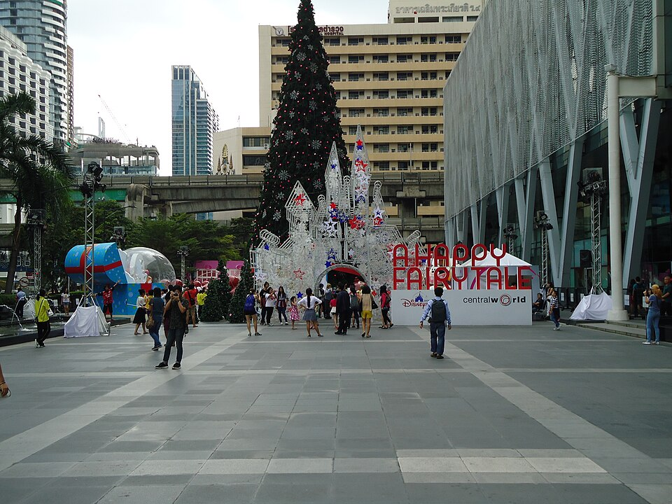
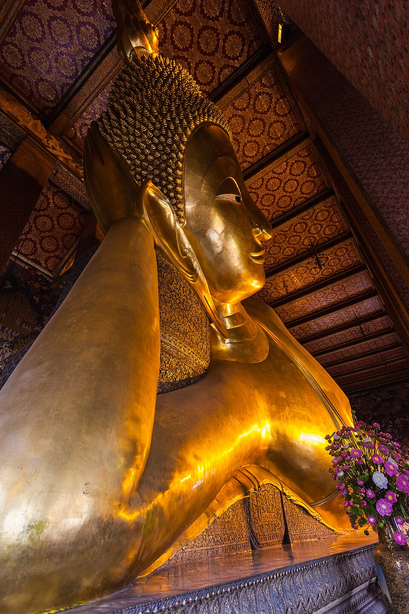
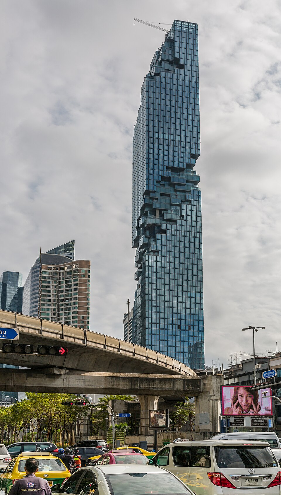
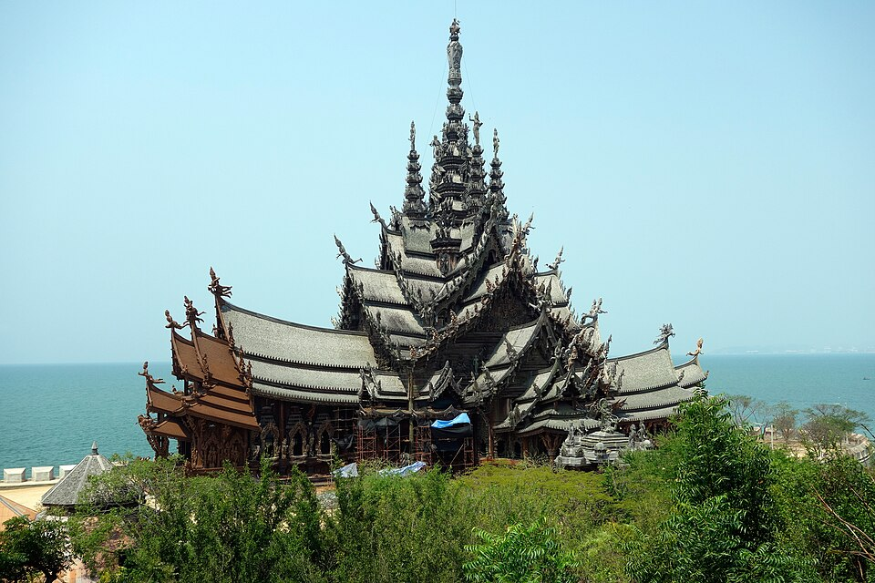
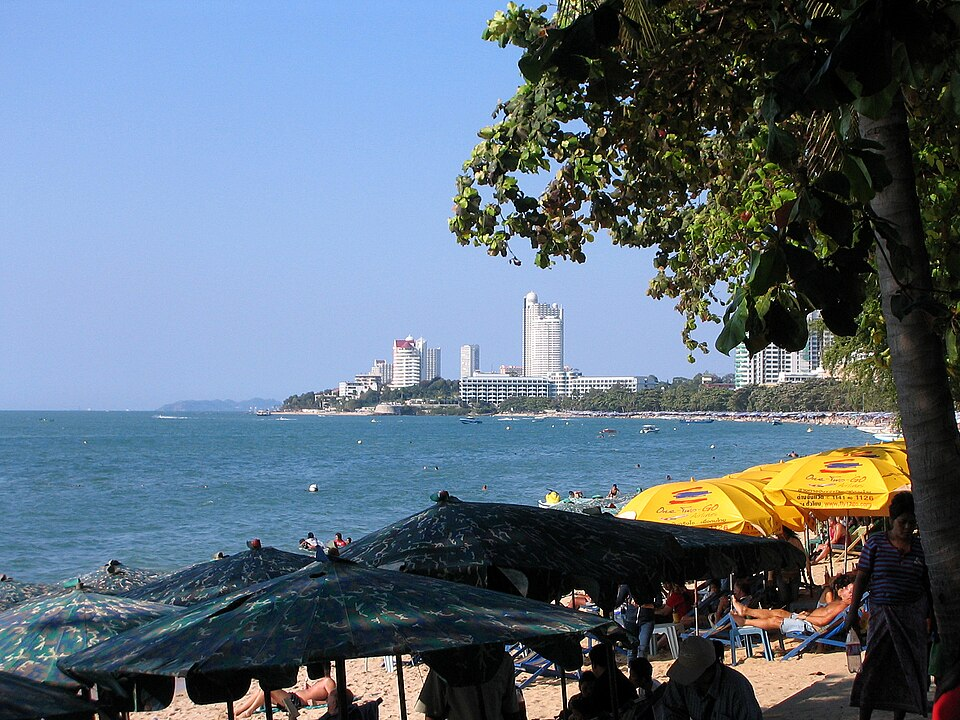
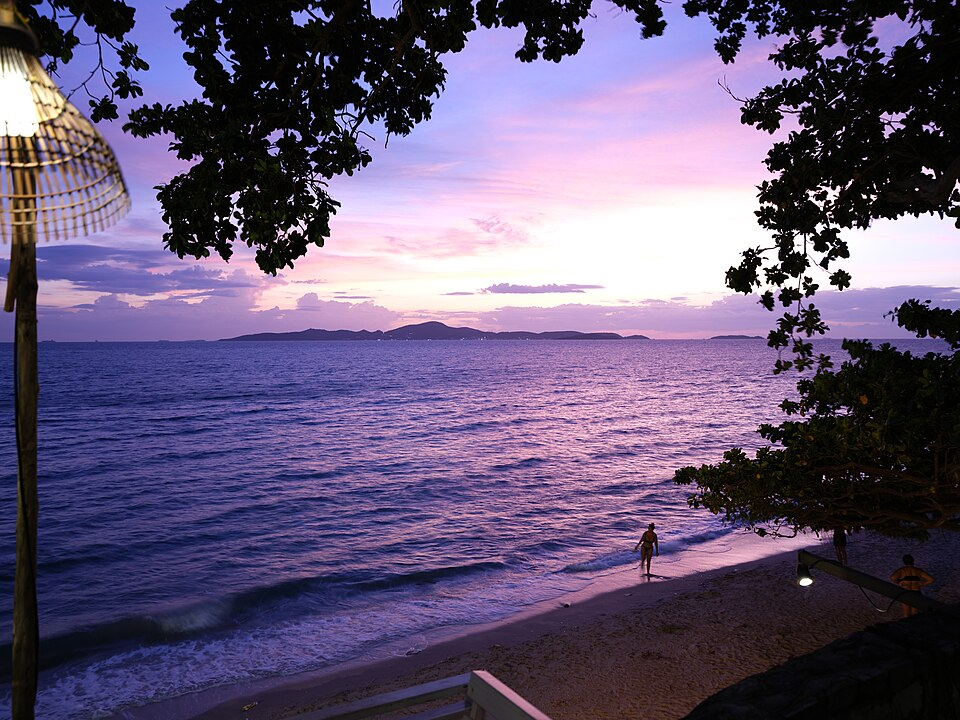
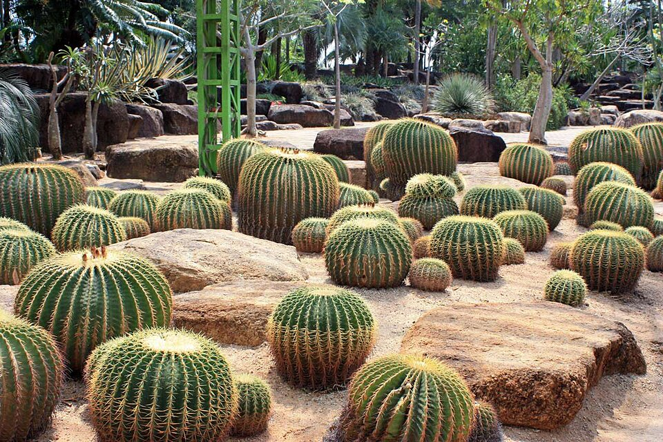
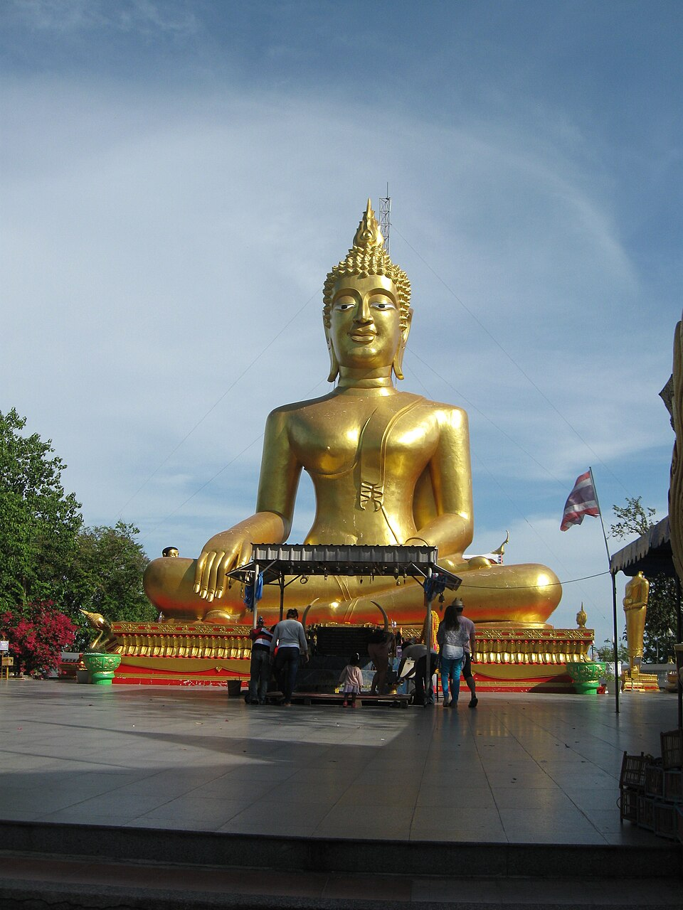

整體節奏一覽
機票
兩人都直飛曼谷，且落地時間非常接近——是三個方案中會合最方便的（每天約 20 班 PVG–BKK 直飛航班）。全程不需國內線，是最省錢的方案。
| 去程 | 航班 | 時間 | 金額（每人） |
|---|---|---|---|
| 🌼（TPE → BKK） | CI | 13:50 → 16:45 | — |
| 😈（PVG → BKK） | 春秋 | 13:00 → 16:45 | — |
| 幾乎同時落地，直接在到達大廳會合，是三個方案中最輕鬆的會合方式。 | |||
| 回程 1/2 | 航班 |
|---|---|
| 兩人皆從 BKK 出發（可各自選擇對應航空公司） | — |
旅遊風格
曼谷玩樂＋海濱度假＋海灘跨年＋收尾晚餐。不需搭國內線，全程陸路移動，交通最單純。
👍 強項
- 最省錢（中間值比方案 1 少約 1 萬、比方案 3 少約 2.5 萬）
- 會合最簡單：兩班幾乎同時落地
- 不用搭國內線，航班選擇最多、最不怕延誤
- 芭達雅跨年祭（免費海灘演唱會＋煙火），度假感強
- 娛樂豐富：人妖秀、東芭樂園、格蘭島
👎 劣勢
- 芭達雅的海不漂亮，風景最普通（格蘭島較佳）
- Walking Street 一帶是紅燈區，觀感可能不佳，建議住北邊 Wong Amat / Naklua
- 文化深度普通，較像「城市＋樂園」
- 陸路移動 2 次（各約 2–2.5 小時），要換 3 間飯店
每日規劃

CentralWorld 聖誕燈飾
曼谷最盛大的年末燈飾展示地點之一，巨型聖誕樹搭配主題造景，是抵達當晚最輕鬆的散步行程。

大皇宮・玉佛寺
泰國最重要的皇家建築群，金碧輝煌的屋頂與尖塔是曼谷必訪地標。

Wat Pho 臥佛寺
供奉巨大鎏金臥佛，寺內附設泰式按摩學校，可安排一段體驗。

ICONSIAM
昭披耶河畔大型商場，夜晚燈光與河景相映成趣。

Wat Arun 鄭王廟
昭披耶河畔的瓷片鑲嵌高塔，是情侶泰服寫真的熱門景點。

Thonburi 運河長尾船
穿梭曼谷後花園般的運河水巷，體驗在地水上生活風貌。

King Power Mahanakhon SkyWalk
78 樓玻璃地板觀景台，可俯瞰整座曼谷城市夕陽。

Sanctuary of Truth 真理寺
全木造建築，高度 105 公尺，工程至今仍在持續進行。日票 500 THB／夜票 700 THB。
必看：純木雕刻的巨大殿堂外觀、海邊夕陽襯托的剪影

Wong Amat Beach
芭達雅北邊較安靜的海灘，適合情侶散步，遠離南邊 Walking Street 的喧鬧。

Koh Larn 格蘭島
芭達雅外海島嶼，海水比本島清澈，是水上活動的主要去處：浮潛、拖曳傘、香蕉船一應俱全。

Nong Nooch Tropical Garden 東芭樂園
大型熱帶植物園，園內有造景花園、仙人掌園區與傳統文化表演，是芭達雅著名的半日遊景點。

Khao Chi Chan 七珍佛山
於山壁上以雷射雕刻並鑲上金線的巨型佛像，為泰皇九世登基 50 周年紀念建造。

Bali Hai 碼頭跨年煙火
午夜時分沙灘正前方海面施放的煙火秀，整條海灘路都能觀賞，是芭達雅跨年夜的最高潮。

Go-Ang Pratunam 水門雞飯
在地人氣海南雞飯名店，雞肉滑嫩、醬汁香氣足。
建議體驗活動
行程節奏
最辛苦的兩天（12/27 玩樂日、12/28 移動日）之後緊接輕鬆的島嶼日；跨年前一天刻意安排慢活行程，養精蓄銳迎接跨年夜。
輕鬆
中強
中強
移動日
中強
中強
輕鬆＋跨年高峰
移動＋收尾
預算（兩人合計，新台幣）
| 項目 | 最低 | 最高 |
|---|---|---|
| 機票 | 26,000 | 44,000 |
| 住宿（8 晚） | 18,000 | 54,000 |
| 當地交通 | 3,500 | 8,000 |
| 餐飲 | 10,000 | 30,000 |
| 門票活動 | 7,000 | 26,000 |
| 雜支 | 4,000 | 12,000 |
| 合計 | 68,500 | 174,000 |
住宿
曼谷
前 3 晚建議河濱或 Siam / Sukhumvit 區；最後 1 晚建議 Sukhumvit（往機場較快）。
芭達雅（建議北邊 Wong Amat / Naklua，安靜且適合情侶，遠離紅燈區）
| 價位 | 飯店 | 特色 |
|---|---|---|
| 高 | Cape Dara Resort | 私人海灘感，US$123 起 |
| 中高 | Hilton Pattaya | — |
| 中價 | Pullman Pattaya Hotel G | Wong Amat 海灘，約 2,800 THB 起 |
| 平價 | Naklua 三星飯店 | 1,200–2,000 THB |